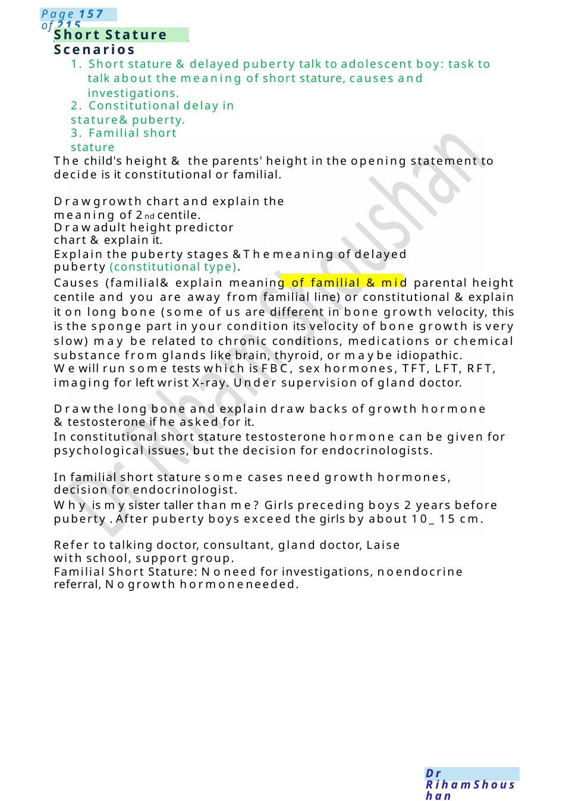

laryngomalacia
What will happen to him, he took this antibiotic unnecessarily Actually, two doses of antibiotics are less likely to cause any harm, but meanwhile we will monitor his condition, he is under our close observation and if anything happened, wewill interfere immediately. I want to take him to another hospital: I totally understand howmuch you are frustrated, but we are familiar with her condition, and he start to be familiar with us . Doyou prevent me? Actually it is totally your right, once he is stable, I will discuss it with myconsultant I will complain . totally understand your feelings and appreciate your worrie…
Scenario Summary
What will happen to him, he took this antibiotic unnecessarily Actually, two doses of antibiotics are less likely to cause any harm, but meanwhile we will monitor his condition, he is under our close observation and if anything happened, wewill interfere immediately. I want to take him to another hospital: I totally understand howmuch you are frustrated, but we are familiar with her condition, and he start to be familiar with us . Doyou prevent me? Actually it is totally your right, once he is stable, I will discuss it with myconsultant I will complain . totally understand your feelings and appreciate your worrie…
Full Original Scenario

laryngomalacia
What will happen to him, he took this antibiotic unnecessarily Actually, two doses of antibiotics are less likely to cause any harm, but meanwhile we will monitor his condition, he is under our close observation and if anything happened, wewill interfere immediately.
I want to take him to another hospital: I totally understand howmuch you are frustrated, but we are familiar with her condition, and he start to be familiar with us . Doyou prevent me? Actually it is totally your right, once he is stable, I will discuss it with myconsultant I will complain . totally understand your feelings and appreciate your worries, but let mereassure you, he is ok nowand we will keep our eyes on him .
I will complain: It is totally your right; I will guide you through paediatric advice and liaison service PALS.
Scenario: 3 weeks baby diagnosed with laryngomalacia, one week back diagnosed as GERDon lifestyle modification.
Explanation: This is our box voice , it is present here in our neck ( pointing to your neck ), there are two cords in front of this box, when the air pass between the cords it produce that sound we are using to speak or the baby is using to cry and later on to verbalize. Because he has soft larynx, it is very soft and flabby adding the tissue above the larynx, when he takes a breath in, these tissues are sucked into towards the opening of the voice box narrowing it producing this louder voice you hear.
How will we treat it? Luckily no treatment is needed as 70% will improve in first year and 90%will improve by the second year.
But he did not get any test: Actually, this condition is only a clinical diagnosis and also, wewill have a meeting with ear, nose and throat doctor and he can do some tests to confirm the diagnosis.
We are here and you will not give me any medications for this throwing up (GERD, one week back) and nowyou are telling methat no medications as well: Actually, when he came only with throwing up, he did not need any medicines, but now as wesaid wemust manage and treat the throwing up as it mayworsen this soften larynx
What is the treatment? Something to thicken the formula and drug to decrease the activity in the stomach. So, you will not give himany treatment for this soft larynx? Only if there is change in noisy breathing, change in color, pulling of skin in and out between the ribs, at this time you must seek medical advice immediately.

Short Stature Scenarios
1. Short stature &delayed puberty talk to adolescent boy: task to talk about the meaning of short stature, causes and investigations.
2. Constitutional delay in stature& puberty.
3. Familial short stature
The child's height & the parents' height in the opening statement to decide is it constitutional or familial.
Drawgrowth chart and explain the meaning of 2nd centile.
Drawadult height predictor chart &explain it.
Explain the puberty stages &Themeaning of delayed puberty (constitutional type).
Causes (familial& explain meaning of familial & mid parental height centile and you are away from familial line) or constitutional &explain it on long bone (some of us are different in bone growth velocity, this is the sponge part in your condition its velocity of bone growth is very slow) may be related to chronic conditions, medications or chemical substance from glands like brain, thyroid, or maybe idiopathic.
Wewill run some tests which is FBC, sex hormones, TFT, LFT, RFT, imaging for left wrist X-ray. Under supervision of gland doctor.
Drawthe long bone and explain draw backs of growth hormone &testosterone if he asked for it.
In constitutional short stature testosterone hormone can be given for psychological issues, but the decision for endocrinologists.
In familial short stature some cases need growth hormones, decision for endocrinologist.
Why is mysister taller than me? Girls preceding boys 2 years before puberty . After puberty boys exceed the girls by about 10_ 15 cm.
Refer to talking doctor, consultant, gland doctor, Laise with school, support group.
Familial Short Stature: Noneed for investigations, noendocrine referral, Nogrowth hormoneneeded.